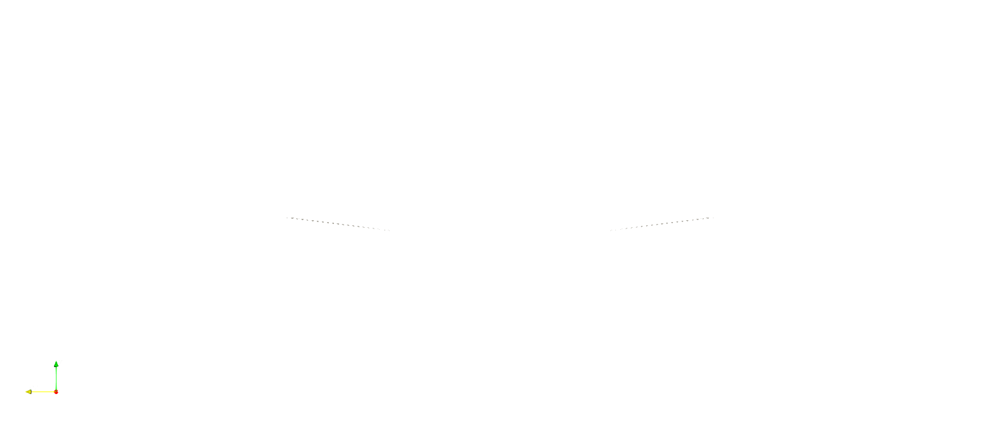
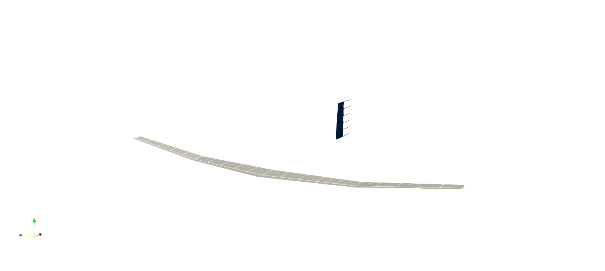
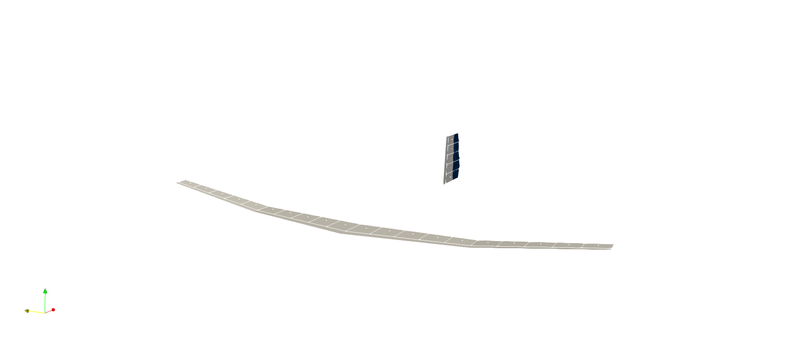

How to define Complex Wings
In the tutorial First Steps we introduced the simpleWing() function. In this guide, we look at creating more complex wings using the complexWing() function. Note that this is a how to guide, showing how to use the complexWing() function. For details on this function implementation, please refer to the refernce section of this documentation.
Define a Symmetric Wing
In order to use the complexWing() function, we only need to understand that we are responsible for defining the elements of each chord section individually, which gives us greater flexibility than the simpleWing() function, where many assumptions are made for the user.
Let us begin by defining some of the wing parameters
span = 1.0 #length of full span
numlattice = 10 #number of lattice elements on half-spanNow let's define the parameters of each chord. Note that position is normalized by the span, and length is normalized by the tip chord. It is generally easiest to define things absolutely and then normalize.
Also, since we are creating a symmetric wing, we only need information from the center to the tip of the wing, postive indicating along the positive axis for the wing system.
poschord = [0.0; 0.5; 1.0]./span #postion of chord stations
lengthtipchord = 0.03 #length of tip chord
lengthchord = [0.075; 0.05; 0.03]./lengthtipchord #length of chords
twistchord = [0.0; 0.0; -3.0] #twist of chords, in degreesThen let's define the parameters of each section between chord definitions.
sweepsection = [10.0; 5.0] #sweep of sections between chords, in degrees
dihedralsection = [0.0; 7.0] #dihedral of sections between chords, in degreesWe also need to define the aspect ratio of the wing, which is simply the absolute span over the absolute tip chord length.
aspectratio = span/lengthtipchordWith this, we can call the complexWing() function for a symmetric wing.
mainwing = vlm.complexWing(span, aspectratio, numlattice, poschord, lengthchord, twistchord, sweepsection, dihedralsection; symmetric=true)
Define a Non-symmetric Wing
A good example of a non-symmetric wing is something like a vertical stabilizer. The definitions are basically the same, we just set the symmetric flag to false when creating the wing.
span = 0.25 #length of full span
numlattice = 5 #number of lattice elements on half-span
poschord = [0.0; 1.0] #postion of chord stations
lengthtipchordvstab = 0.05 #length of tip chord
lengthchordvstab = [1.25; 1.0] #length of chords
twistchord = [0.0; 0.0] #twist of chords, in degrees
sweepsection = [0.0] #sweep of sections between chords, in degrees
dihedralsection = [0.0] #dihedral of sections between chords, in degrees
aspectratio = span/lengthtipchordvstab
verticalstabilizer = vlm.complexWing(span, aspectratio, numlattice, poschord, lengthchordvstab, twistchord, sweepsection, dihedralsection; symmetric=false, chordalign=1.0)The user can choose where to align the chords. A value of 0.0 aligns along the leading edge, while a value of 1.0 aligns along the trailing edge. Values between 0.0 and 1.0 will align along that ratio of the chord lengths. For example, if you wanted to align the wing along the quarter-chord postition, you would set chordalign = 0.25
Now our verticle stabilizer is defined, but it's not really verticle yet, and it is positioned at the default location, where our main wing is as well. To make it a verticle stabilizer, we'll need to rotate and translate it. To do so, we need to define an origin and coordinate system for the verticle stabilizer wing object.
originvstab = [0.5; 0.0; 0.0] #origin moved 0.5 in positive x-direction
csysvstab = [1.0 0.0 0.0; 0.0 0.0 1.0; 0.0 1.0 0.0] #csys rotated 90 degrees from defaultThen we can set the coordianate system.
vlm.setcoordsystem(verticalstabilizer,originvstab,csysvstab)
Define Control Surfaces
There is no automatic way to define control surfaces. Each control surface will need to be defined as its own wing object and placed manually. Therefore, you must adjust based on the objects already in place. Let's add a rudder to our verticle stabilizer.
span = 0.25 #length of full span
numlattice = 5 #number of lattice elements on half-span
poschord = [0.0; 0.25; 1.0] #postion of chord stations
lengthtipchord = 0.03 #length of tip chord
lengthchord = [1.25; 1.5; 1.0] #length of chords
twistchord = [0.0; 0.0; 0.0] #twist of chords, in degrees
sweepsection = [0.0; 0.0] #sweep of sections between chords, in degrees
dihedralsection = [0.0; 0.0] #dihedral of sections between chords, in degrees
aspectratio = span/lengthtipchord
rudder = vlm.complexWing(span, aspectratio, numlattice, poschord, lengthchord, twistchord, sweepsection, dihedralsection; symmetric=false, chordalign=0.0)
lengthrootchordvstab = lengthchordvstab[1]*lengthtipchordvstab
originrudder = [0.5+lengthrootchordvstab; 0.0; 0.0] #account for vstab position and chord
csysrudder = [1.0 0.0 0.0; 0.0 0.0 1.0; 0.0 1.0 0.0] #csys rotated 90 degrees from default
vlm.setcoordsystem(rudder,originrudder,csysrudder)